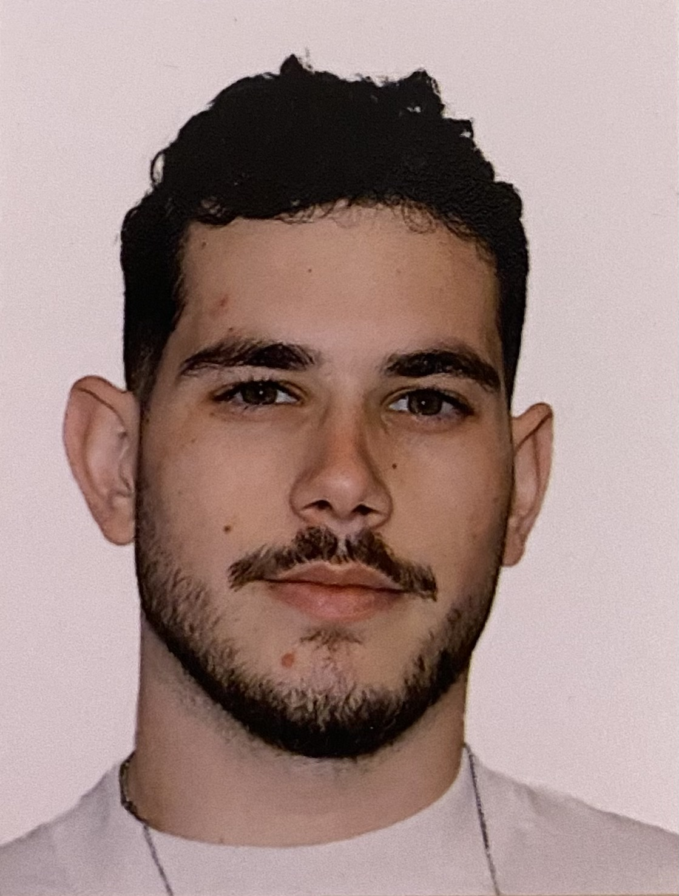

Noam Schwartz's Resume

About Me
An Information Systems and Data Science student , Passionate about product development, data science,and coding.
Owned a business for one year, dealing with problems and learning how to resolve them
Education
- B.S.C information System & Data Science, The Max Stern Yezreel Valley College 11/2024 – present
- CSM Course, Product Experts Academy,2023
- Tefen High School,2018
Work Expirience
- Label Assistent and Technology Manager, On The Way Records,2024-Now
- Sales Manger, Budss,2023-2024
- Generating new leads
- Establish and Manage HubSpot for the entire startup
- Taking part in demo meetings
- Making cold calls for the first interaction
- Designing the demonstration for the prospects on Figma
- Meetings Coordinator, Atir Finance,2023-2024
- Coordinate meetings with financial agents
- SDR, Cellcom,2022-2023
- Using cold calling to communicate with the prospects
- Dealing with goals.
- Dealing and solve the customers problems to get the deal done
- Co-Founder,Striture- E-commerce Fashion busieness 2021 – 2022
- Communicating with all the suppliers from Turkey and China.
- Building the company website on Wix
- Developed the business for a year until the closing
- Taking a part of the customer service
- Selling on site for customers in our warehouse
Miletry Service
- Combat Fighter, Israeli Navy Rocket Ships 2019 – 2021
Skillas
- HTML
- Python
- Java
- Proactive
- Listening
Languages
- Hebrew - Native
- English - Professional
Contact Me